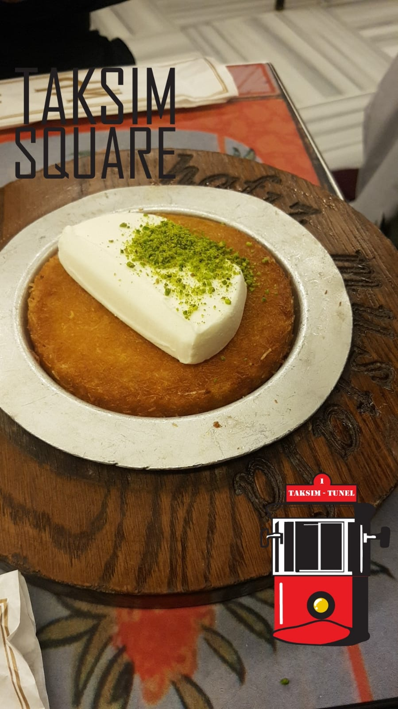
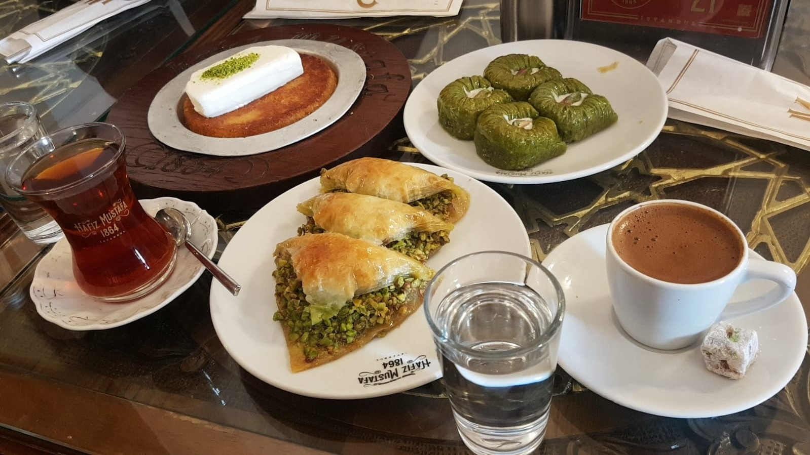
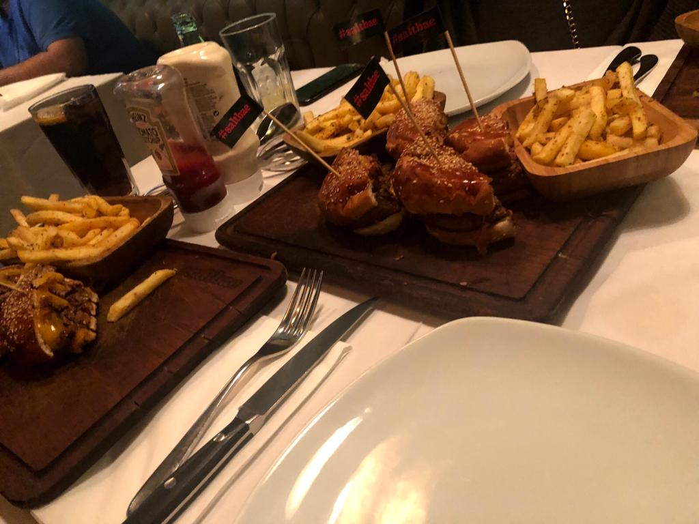
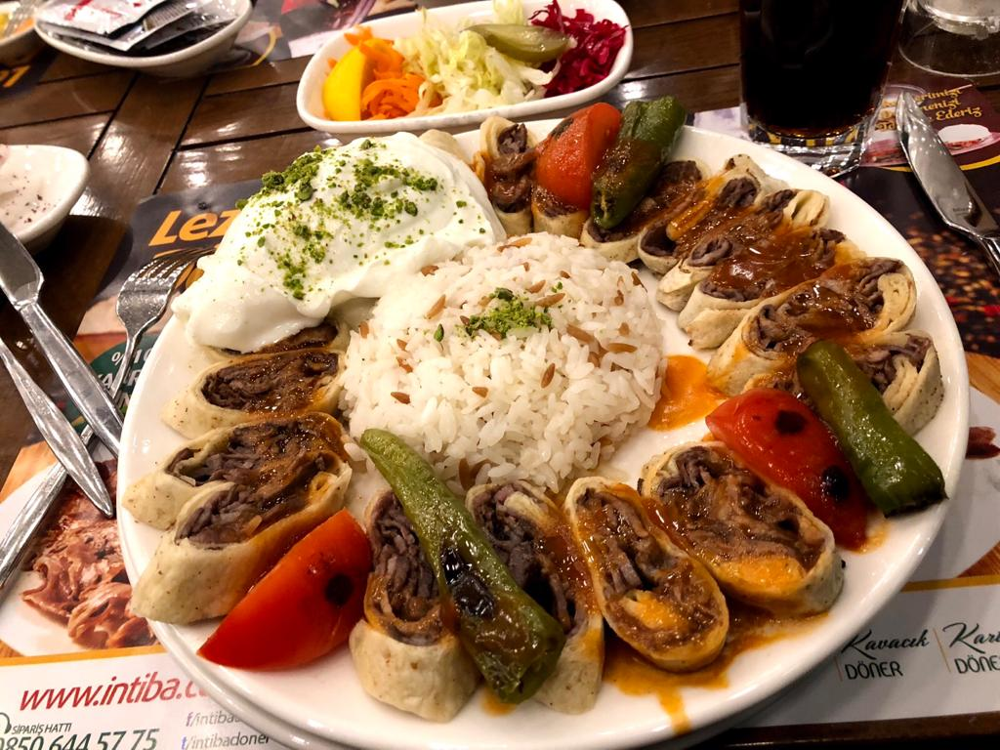
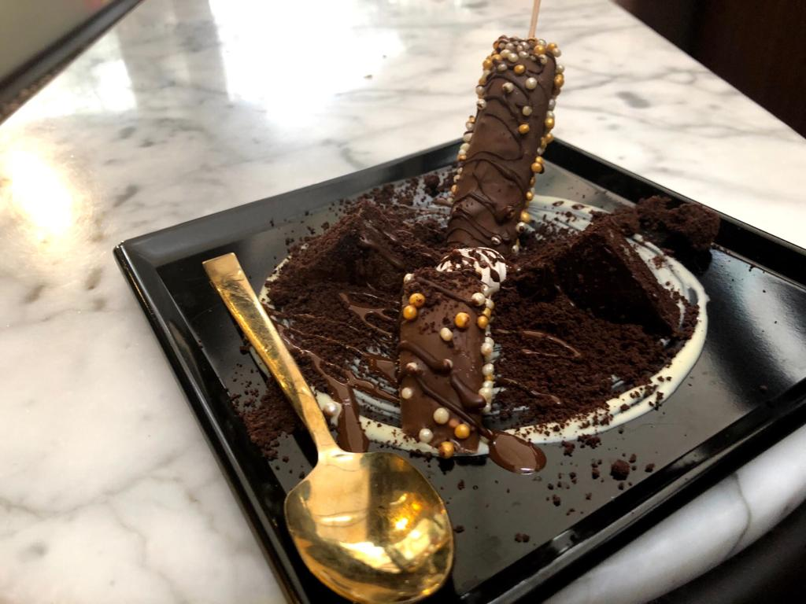
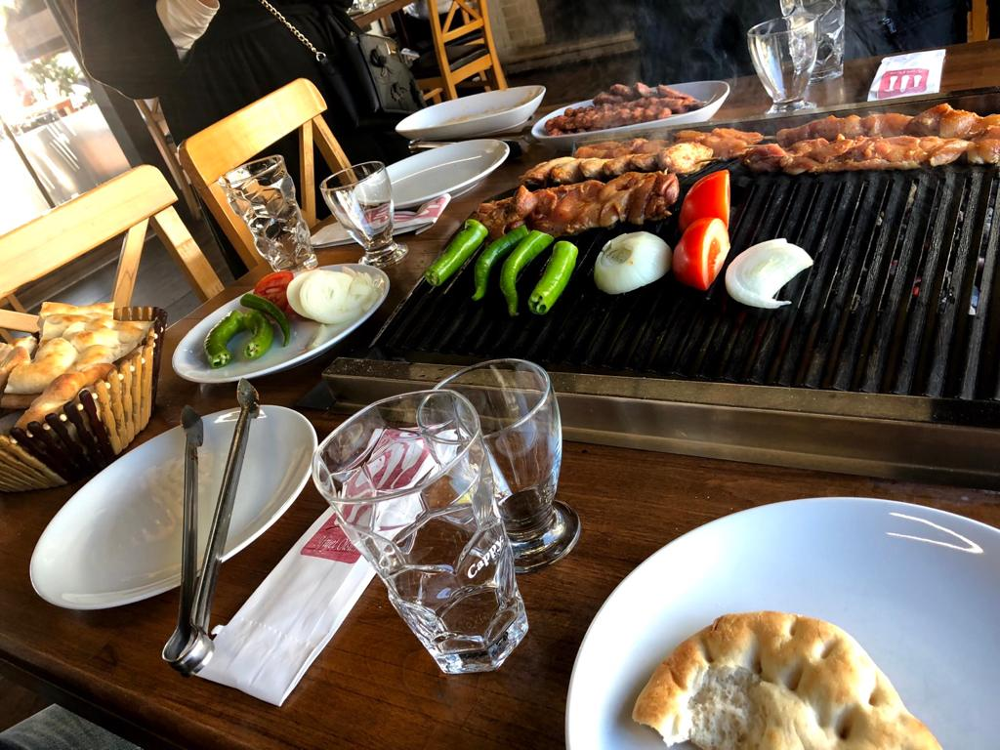
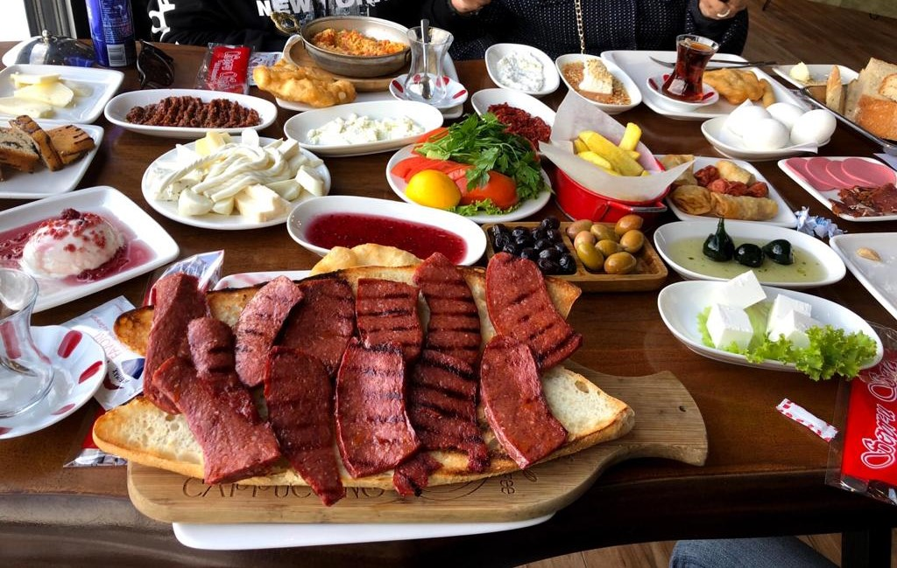

Wonderful Dishes of Turkey
Infamous dishes of Turkey
Turkey has many wonderful dishes however, their main attraction is their deserts. The best deserts they have are Kunafa, and Balava. They also have a special kind of icecream that is chewey, which was the first time I ate icecream that was reminds me of gum from its texture. Their deserts alone make me want to go back just so I could taste the amazing baklava and kunafa that they have. Although, there is some in Bahrain where I live, it still not nearly as good as theirs are. It's no wonder why it is their speciality that they offer in almost every resturant. I remember in some resturants they would immediately ask if we wanted baklava and/or kunafa after we were done with the main course. Another thing they always offer with them is complimentary tea to drink with the desert that we ordered.
Additionally, their main courses are also very delicious. Everywhere you go they always have Kebab and grills. They also have their own speciality in making rice, it wasn't the regular rice that we eat which was a new and wonderful experience for me to taste. In some resturants they even have grills that are open for use, there was this resturant at the top on a mountain that you could choose the meat and chicken you wanted to grill and then they would give it to you and you would grill it and then eat it. Also, they were very kind in helping you if you needed help with grilling the food, one of my favorite experiences while dining is in Turkish resturants. There was this very famous resturant where after ordering while bringing the food they would celebrate by clapping and singing, which was very entertaining and made us feel special and nice.
      